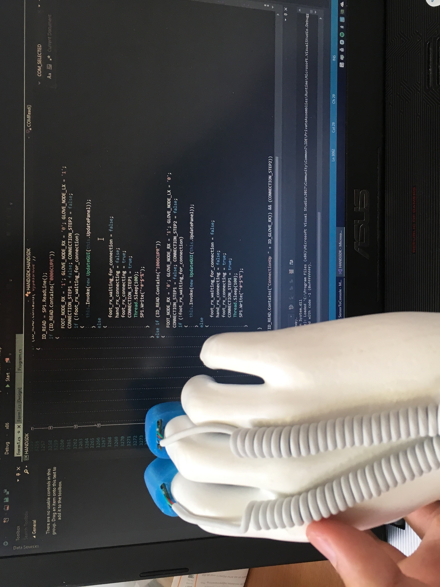

My and my friend david decided last summer to go on Erasmus. We don't know anything about it but we war ready to try it. We chose to go to Pisa in Italy. We worked in small village called Pecciolli with our team. My task in this job was create C# class which can be used for gaining data from sensors.
Our team was working on this project some already some time. Main goal of this project was to
create product which will help doctors to diagnose parkinson disease. Till now doctors decide
if pacient have parkinson and our goal was to create product which will be more accurate
than doctor because as you know people can make mistake.
With none experience with bluetooth sensor communication I decide I will try and do my best.
Job was very interesting because you could hold it and test it. Realyzing that final product could help
real people in real word give me some drive to do my best.

On this video you can see woman playing with our hand sensor prototype. During time we spend in
Italy there was expo of robots which take place in Pisa. We visit that expo and side by other products
of our firm we show also our prototype.
On video you can see only right hand sensor but there was sensor for every arm so patient can
do more excercises with it.
This expo was great experience for me because a help to create something
what people will use and what can also help people. Summing summer spend in Italy I can be only
grateful. So much experience gained from this project.
You can find code on my github of on this link.